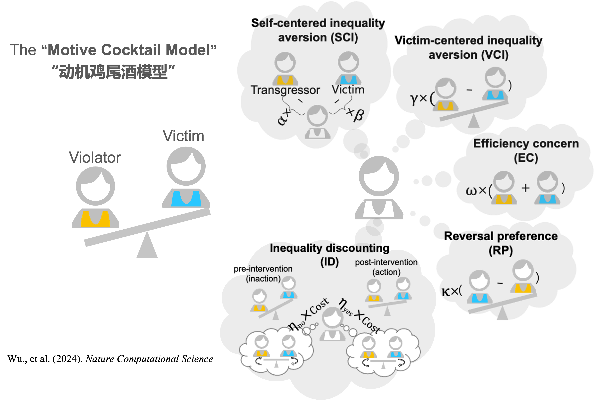
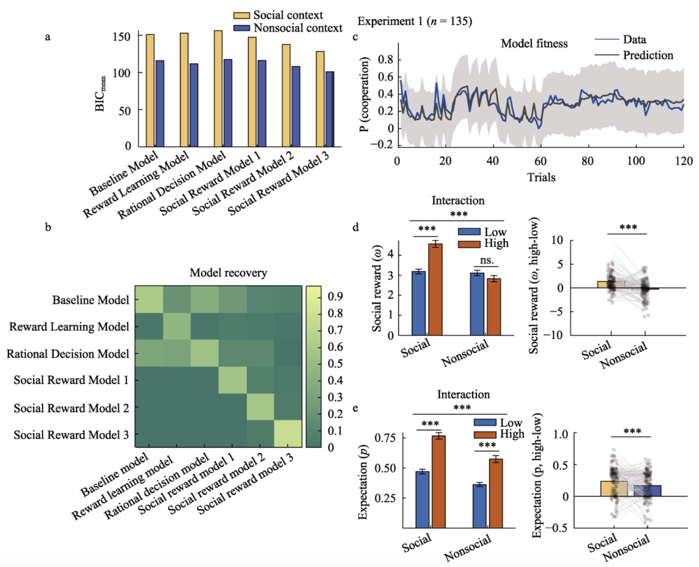
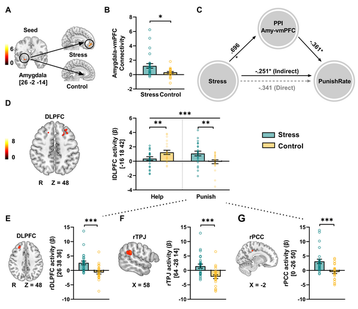
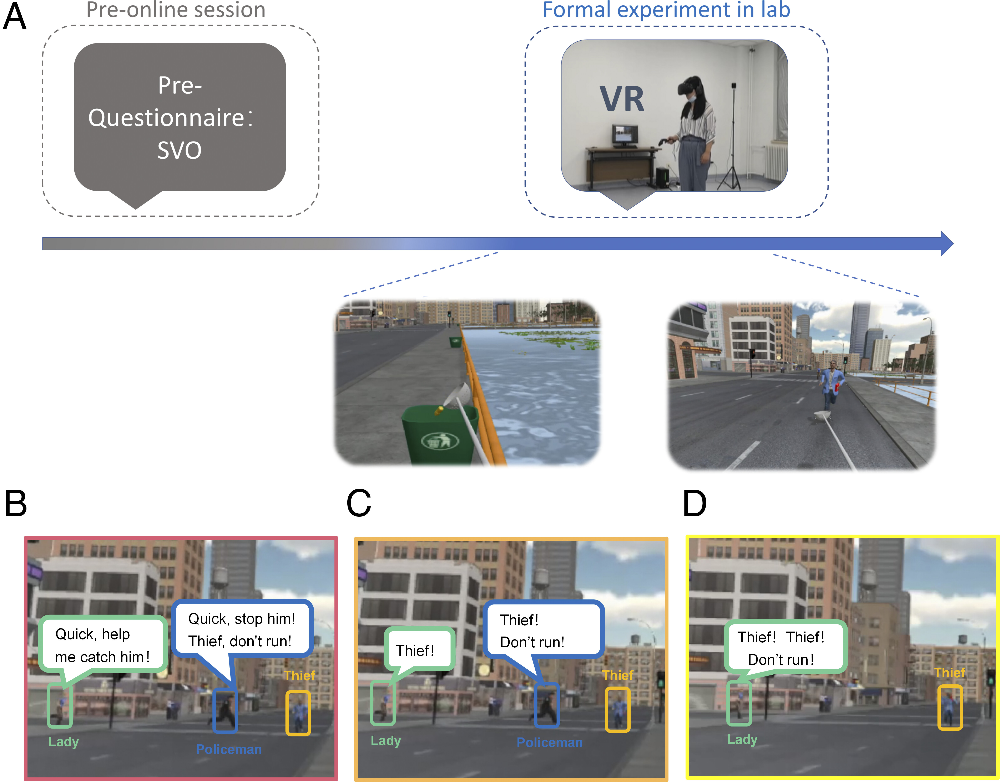
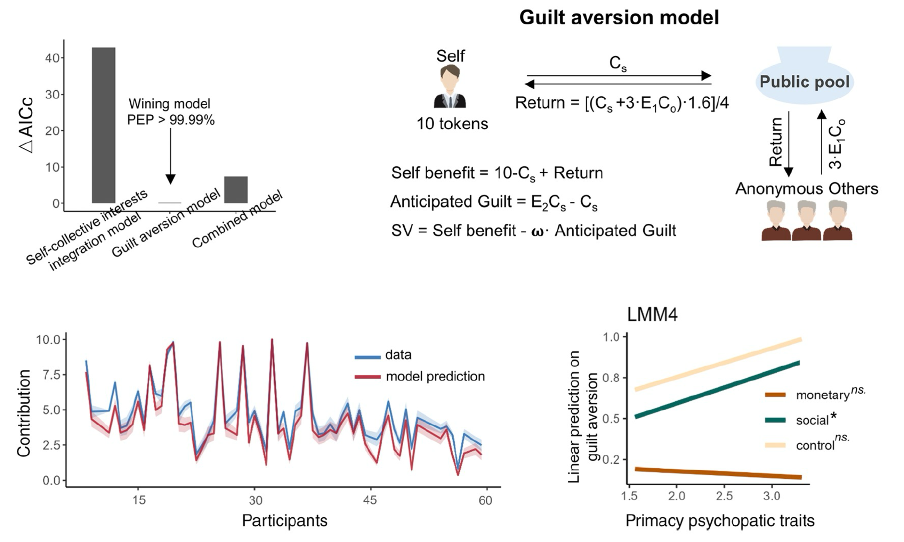

|
Hi, welcome to my website! I’m Xiaoyan, and my English name is Cheyenne. I will be starting as a postdoctoral researcher in the Department of Adult Psychiatry and Psychotherapy at the University of Zurich, working with Prof. Philipp Homan. I obtained my PhD in Psychology and Cognitive Neuroscience from IDG McGovern Institute at Beijing Normal University, supervised by of Prof. Chao Liu and Prof. Hang Zhang (Peking University). During my PhD, I studied in the Zurich Center for Neuroeconomics SNS lab at the University of Zurich as a visiting scholar, supervised by Prof. Christian C. Ruff. My research focuses on human behavior, altruism, moral decisions, and the development of interpersonal relationships, with a strong emphasis on computational modeling and neuroimaging (fMRI and MEG). Outside of work, I am passionate about UFOs and the practice of Chinese Feng Shui. I enjoy meeting new people and making friends. I believe the real world is represented in the human brain. My favorite singer is Mylène Farmer.CV / Google Scholar / Twitter xiaoyan.psych@gmail.com |

|
|
News: 2024.11 - Honoured to be an invited speaker at South China Normal University, see you in Guangzhou! News: 2024.10 - Honoured to present at the 21st Annual Society for Neuroeconomics Meeting, see you in Cascais, Portugal! News: 2024.10 - Successfully defended my PhD dissertation and earned my doctoral degree in Psychology and Cognitive Neuroscience. News: 2024.09 - A big thanks to Prof. Jie Hu for writing a review article for our work on human altruism. News: 2024.08 – Our work on human altruism has been accepted in Nature Computational Science! News: 2024.03 – Honoured to give an invited talk at Waseda University and University of Tokyo on human altruism, see you in Tokyo! News: 2024.03 – Honoured to present at the Society for Social Neuroscience annual meeting on trust, see you in Tsukuba! News: 2024.01 – Honoured to give an invited talk at Stanford University on neurocomputational components of trust. News: 2024.01 - My visit to Zurich has ended, and I am back at Beijing Normal University. See you all in Beijing! News: 2023.10 – Honoured to present at the 21st Annual Society for Neuroeconomics Meeting, see you in Vancouver! News: 2023.07 – Honoured to attend the Neuroeconomics Summer School at the University of Pennsylvania, see you in Philadelphia! News: 2022.12 – Honoured to give an invited talk at the University of Zurich on human altruism, see you in Zurich! News: 2022.09 – Honoured to participate in the Computational Psychiatry Course Zurich 2022 at the University of Zurich, see you in Zurich! News: 2023.06 – Honoured to complete MRI User Training with a Qualified Certificate at University Hospital Zurich, Switzerland. News: 2022.08 – Honoured to give an invited talk at Peking University on inequality aversion and third-party intervention! News: 2021.12 – Excited to start my journey in Zurich as a visiting guest at UZH. |
|
|
|  |
The motive cocktail in altruistic behaviors.
Xiaoyan Wu *, Xiangjuan Ren *, Chao Liu, Hang Zhang Nature Computational Science. (2024). DOI This study explored the computational mechanisms of human altruistic behaviors, specifically third-party interventions in unequal situations. Using computational modeling and behavioral experiments, it identified seven socioeconomic motives, known as the "motive cocktail model," that drive altruistic behaviors in varied contexts, demonstrating that such behaviors are shaped by complex, interlinked motives that vary between individuals. |
|  |
A cognitive computational mechanism for mutual cooperation: The roles of positive expectation and social reward.
Xiaoyan Wu, Hongyu Fu, Tengfei Zhang, Dongqi Bao, Jie Hu, Ruida Zhu, Chunliang Feng, Ruolei Gu, Chao Liu, Acta Psychologica Sinica. (2024). DOI This study examined conditional cooperation using experimental economics and computational models, focusing on how expectations about others and intrinsic rewards from reciprocity affect cooperation in the Prisoner's Dilemma Game. Results indicated that a social reward model with high-order belief updating learning algorithm best explained human data, providing insights into enhancing mutual cooperation in social dilemmas. |
|  |
Acute stress during witnessing injustice shifts third-party interventions from punishing the perpetrator to helping the victim.
Huagen Wang, Xiaoyan Wu, Jiahua Xu, Ruida Zhu, Sihui Zhang, Zhenhua Xu, Xiaoqin Mai, Shaozheng Qin, Chao Liu, PLoS biology. (2024). DOI This study found that acute stress shifted third parties from punishing offenders to helping victims by reallocating neural resources in emotional and cognitive networks. Stress reduced punishment severity and increased helping, driven by changes in brain connectivity between key regions like the amygdala, dorsolateral, and ventromedial prefrontal cortex. |
|  |
Observing heroic behavior and its influencing factors in immersive virtual environments.
Kelou Jin, Jie Wu, Ran Zhang, Shen Zhang, Xiaoyan Wu, Tingting Wu, Ruolei Gu, Chao Liu, Proceedings of the National Academy of Sciences. (2024). DOI This study leveraged virtual reality (VR) to investigate heroism, overcoming ethical concerns tied to traditional methods. By simulating crime intervention scenarios, it revealed that both situational factors and personal attributes such as gender and empathy significantly influence heroic actions, also noting a link between reduced heroism and increased social conformity. This approach not only sheds light on heroism but also illustrates VR's potential in social psychological research. |
|  |
Social incentives foster cooperation through guilt aversion: An effect that diminishes with primary psychopathic traits.
Xiaoyan Wu, Ruida Zhu, Xu Gong, Yuejia Luo, Chao Liu, PsyCh Journal. (2023). DOI This study investigated how monetary and social incentives influenced cooperation in individuals with primary psychopathic traits using a one-shot public goods game. While both incentives increased cooperation, those with higher psychopathic traits were less influenced by social incentives due to reduced guilt aversion, as they discounted others' expectations. |
|
|
| Reviwer of Frontiers in Behavioral Economics, Frontiers in Psychology. |
|
Credits to the website design from Jon Barron. |